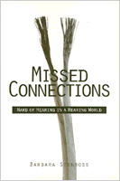

A new kind of self-help book for the hearing impaired
A new kind of self-help book for the hearing impaired


 A new kind of self-help book for the hearing impaired
A new kind of self-help book for the hearing impaired

|  |
Missed ConnectionsHard of Hearing in a Hearing WorldBarbara Stenrosspaper EAN: 978-1-56639-682-0 (ISBN: 1-56639-682-4) |
"Barbara Stenross's Missed Connections is an important contribution to the literature on the experiences of hard-of-hearing people, providing insights and information for several audiences, including deaf and hard of hearing people, their families, teachers, friends, employers, and counselors."
—Susan Foster, National Technical Institute for the Deaf at Rochester Institute of Technology
"Why doesn't she just open up her ears and listen?" Few physical problems are as poorly understood as hearing loss. In Missed Connections, a new kind of self-help book that combines sociological reporting with personal reflection, sociologist Barbara Stenross examines what hearing loss feels like to those who have it and which technologies and strategies can improve communication at home and in public.
Based on seven years of research, Stenross's book tells of how—as she sought information and solutions to help her hard-of-hearing father—she came to join a community group called Village Self Help for Hard-of-Hearing People. Taking us along to group meetings and into the homes of members, Stenross shows us—through the personal accounts of these individuals—the exhaustion that comes from constantly straining to listen, the frustration of missing critical comments or the punchlines of jokes, and the pain that hard-of-hearing family members experience when loved ones accuse them of hearing "when they want to." Full of scenes, dialogues, and conversations, Missed Connections also discusses such practical issues as how people with impaired hearing can continue to use the phone, how assistive technologies can help in public and private, why hearing aids can't always do enough, and how bluffing and silence can hurt more than help. Understanding that when one family member is hard-of-hearing, the whole family can suffer from "missed connections," Stenross offers in this book a useful family resource with a broad range of practical guidance.
With chapters on belonging and acceptance, do's and don'ts in public, lip-reading, hearing aids, and television, Missed Connections will interest a range of readers including deaf and hard-of-hearing people—as well as their families, teachers, friends, employers, and counselors—healthcare professionals, scholars, and others interested in the experiences of and solutions for disability and hearing loss.
Excerpt available at www.temple.edu/tempress
Read a review from Contemporary Sociology, Volume 29.4 (July 2000), written by Jacqueline Boles (pdf).
Read a review from Qualitative Sociology, Volume 24.3 (2001), written by Mark Peyrot (pdf).
Acknowledgments
Introduction
1. Missed Connections
2. Belonging and Acceptance
3. Hearing Aids and Lipreading
4. Assistive Listening Devices
5. In Public
6. Do's and Don'ts
7. The Environment
8. Telephones and Television
9. Music to My Ears
10. At Home
11. Across the Generations
Postscript
References
Selected List of Resouces
Index
 | Barbara Stenross teaches sociology and serves as Assistant Dean of the General College at the University of North Carolina at Chapel Hill. |
© 2015 Temple University. All Rights Reserved. This page: http://www.temple.edu/tempress/titles/1385_reg.html.